Nette Kollegen
Ein herzliches Team, das zusammenhält, sich gegenseitig unterstützt und gemeinsam Erfolge feiert.
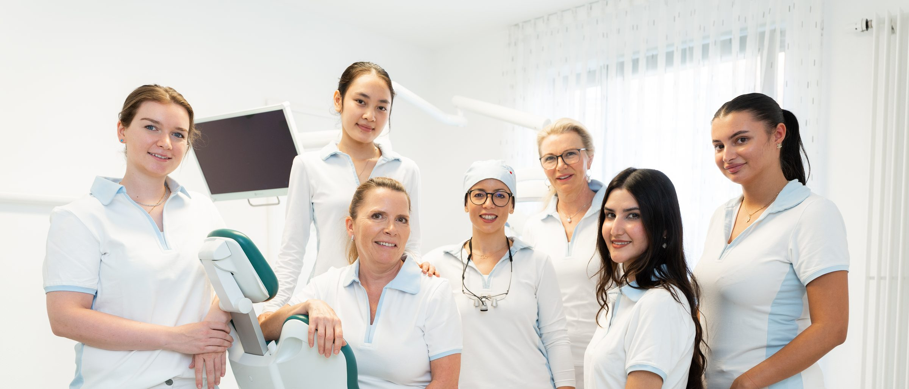
Starte Deine Karriere im Zahnzentrum Messerschmidt. Wir suchen Dich als Verstärkung für unser Team – in einem hellen, modernen Haus mit netten Kolleginnen und Kollegen.
Du befindest Dich auf der Karriereseite des Zahnzentrums Messerschmidt in Mainz-Laubenheim.
Unsere Praxis liegt in einem eigens dafür konzipierten Haus. Es ist nach ökologischen Gesichtspunkten gebaut: Wir heizen und kühlen klimaneutral, und unsere Solaranlage erzeugt bis zu 50 Prozent der Energie, die wir brauchen. Nachhaltigkeit ist uns wichtig – bei den Räumen genauso wie bei der Behandlung unserer Patienten.
Viel Licht, freundliche Farben und vier moderne Behandlungszimmer sorgen für eine angenehme Atmosphäre. Von der Prophylaxe über Implantate und Parodontologie bis zur Kinderzahnheilkunde ist bei uns jeder Tag abwechslungsreich.
Bei uns steckt die Kompetenz im Detail – und dafür brauchen wir Menschen, die mit Sorgfalt und Herz bei der Sache sind.
Zu den Stellen
Bei uns arbeitest Du in einem Team, in dem man sich gegenseitig unterstützt. In regelmäßigen Teambesprechungen stimmen wir uns ab, und bei unseren Mitarbeiterevents feiern wir gemeinsam.
Neu bei uns? Mit einem festen Einarbeitungsplan kommst Du gut an. Danach unterstützen wir Dich bei Weiterbildungen und auf Deinem Karriereweg – ob Du gerade fertig geworden bist oder nach einer Pause wieder einsteigst.
Zu den Stellen
Faire Vergütung plus vermögenswirksame Leistungen
Fahrtkostenzuschuss, gute Parksituation und gute Verkehrsanbindung
Vollzeit oder Teilzeit – wir finden das Modell, das zu Deinem Leben passt
Berufs- und Wiedereinsteiger sind herzlich willkommen
Wir fördern Deine Entwicklung mit Fortbildungen und Perspektiven
Regelmäßige Teambesprechungen und gemeinsame Mitarbeiterevents
Ergonomisch eingerichtet und klimatisiert – in hellen, modernen Räumen
Kaffee ist selbstverständlich, Einkaufsmöglichkeiten liegen gleich um die Ecke
Unsere Praxis ist Montag bis Donnerstag von 8 bis 20 Uhr und freitags von 8 bis 16 Uhr geöffnet. Innerhalb dieser Zeiten stimmen wir Deine Arbeitszeiten gemeinsam mit Dir ab.
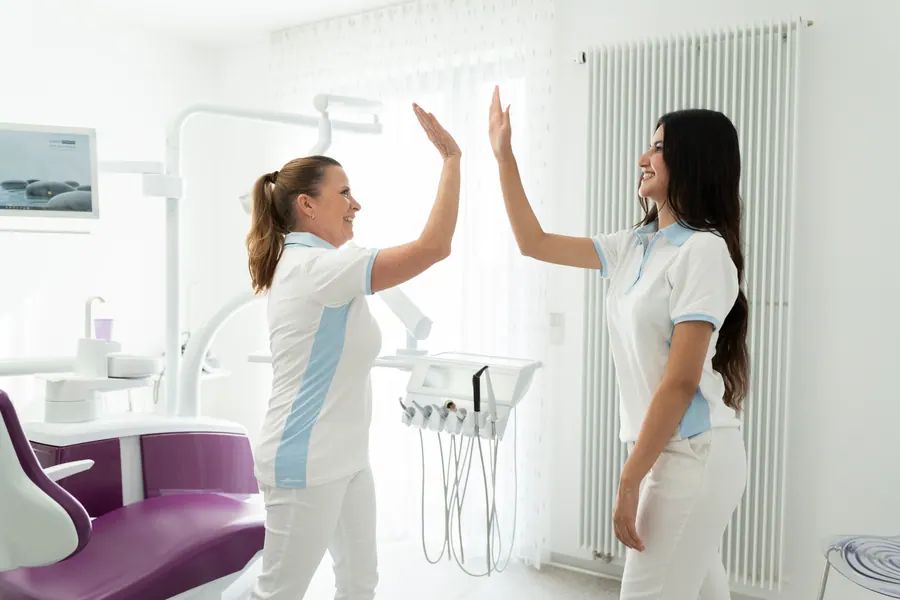
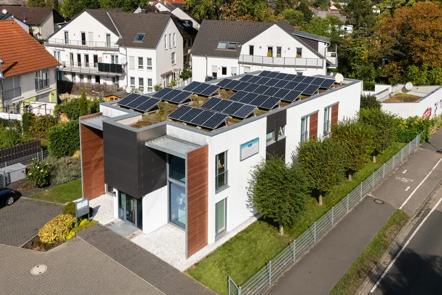
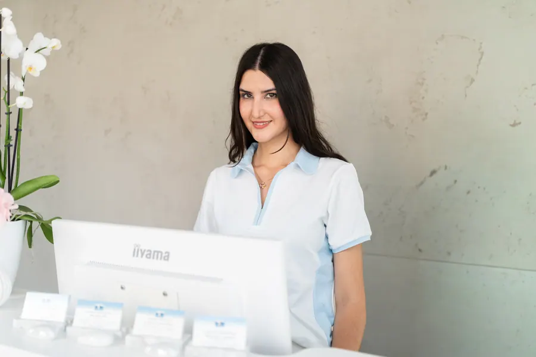
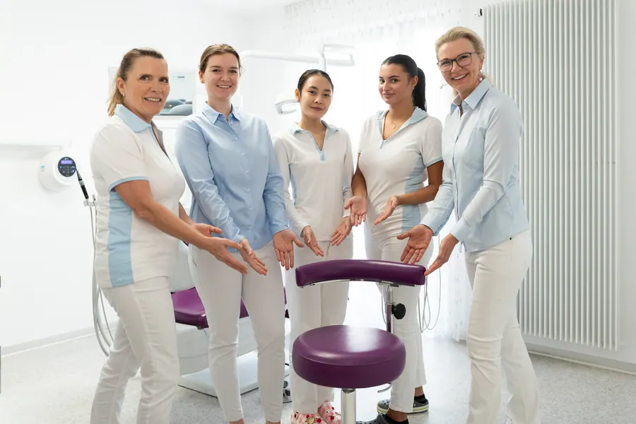
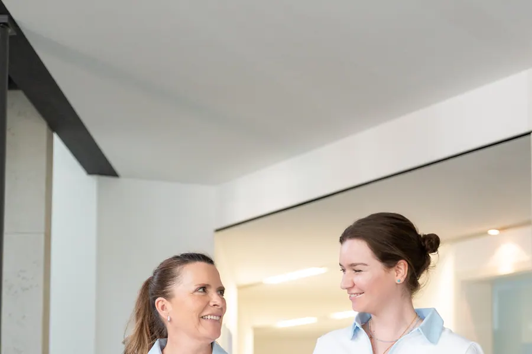
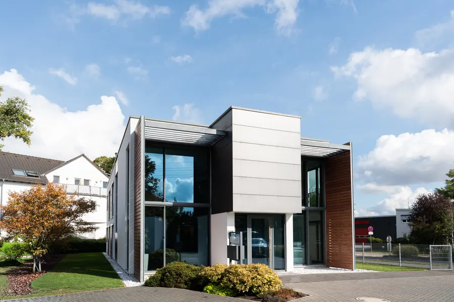
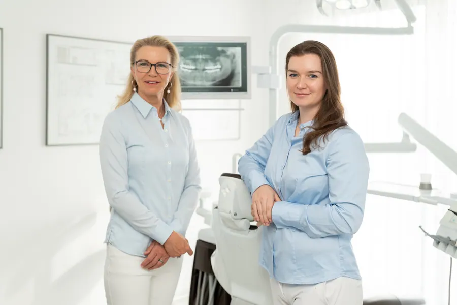
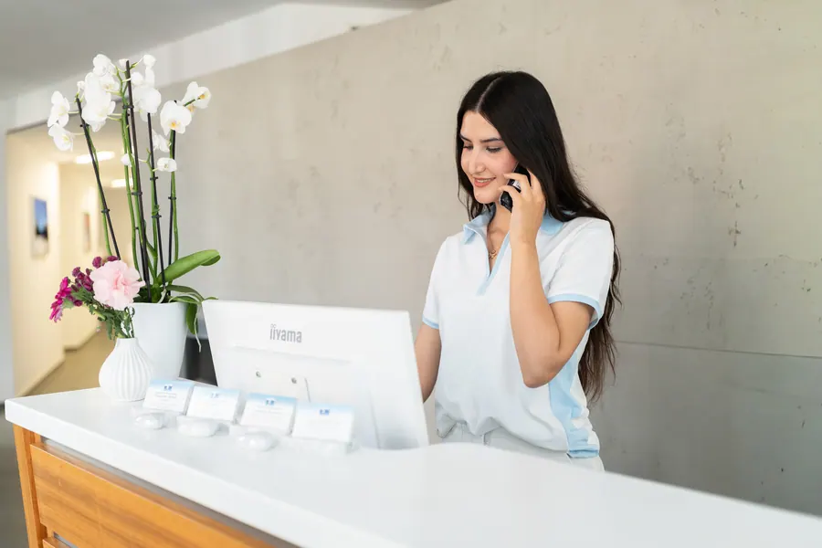
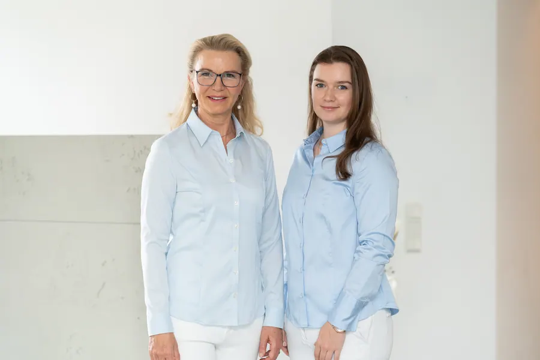
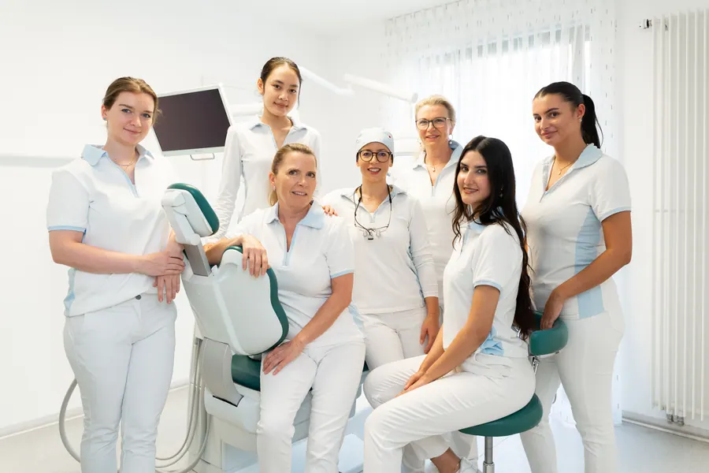
Wir suchen Zahnmedizinische Fachangestellte, ZMP und ZMF sowie Auszubildende für unser Zahnzentrum in der Parkstraße in Mainz-Laubenheim.
Nichts Passendes dabei? Initiativbewerbungen sind jederzeit willkommen – per WhatsApp, Telefon unter 06131 86926 oder über das Formular einer Stellenanzeige.
Ein herzliches Team, das zusammenhält, sich gegenseitig unterstützt und gemeinsam Erfolge feiert.

Ein eigens gebautes, ökologisches Haus mit vier modernen Behandlungszimmern und neuester Technik.

Viel Tageslicht und freundliche Farben – ein Arbeitsplatz, an dem man sich jeden Tag wohlfühlt.
Dr. Sabine Messerschmidt
Zahnärztin | Praxisinhaberin

Bewerben soll bei uns einfach sein. Hier findest Du das Wichtigste auf einen Blick.
Für den ersten Kontakt brauchst Du keine Unterlagen. Lebenslauf, Zertifikate und Zeugnisse kannst Du mitschicken oder später nachreichen.
Prüf vor dem Absenden bitte Deine Kontaktdaten, vor allem die Telefonnummer – so erreichen wir Dich schnell.
Verzichte auf ein langes Anschreiben. Schreib uns lieber in zwei, drei Sätzen, wer Du bist und was Dich motiviert.
Du hast vorab eine Frage? Schreib uns per WhatsApp oder ruf an unter 06131 86926.
Sobald Deine Bewerbung da ist, sehen wir sie uns an und melden uns schnell bei Dir.
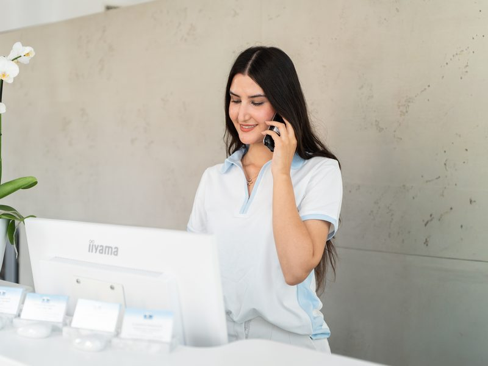
In einem kurzen Gespräch lernen wir uns kennen und klären erste Fragen.
Dann laden wir Dich zu uns ins Zahnzentrum ein und schauen gemeinsam, ob wir zusammenpassen.
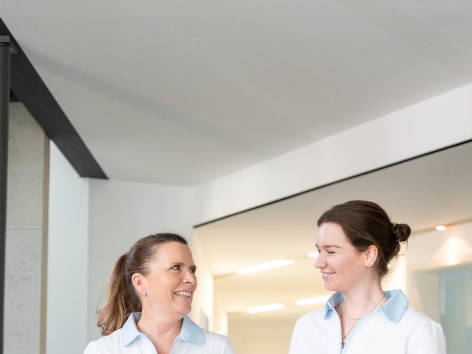
An einem Schnuppertag erlebst Du unser Team und Deinen künftigen Arbeitsplatz ganz direkt.
Nein. Für den ersten Kontakt reichen Name, Telefonnummer und E-Mail-Adresse. Lebenslauf, Zertifikate und Zeugnisse kannst Du gerne mitschicken oder später nachreichen.
Ja, sehr gerne. Schreib uns einfach über das Formular einer Stellenanzeige, per WhatsApp oder ruf uns an.
Unsere Praxis ist Montag bis Donnerstag von 8 bis 20 Uhr und freitags von 8 bis 16 Uhr geöffnet. Innerhalb dieser Zeiten finden wir gemeinsam ein Modell, das zu Dir passt – in Vollzeit oder Teilzeit.
Ja. Mit unserem Einarbeitungsplan begleiten wir Dich Schritt für Schritt – egal, ob Du gerade fertig geworden bist oder nach einer Pause zurückkommst.
Die nächste Ausbildung zur Zahnmedizinischen Fachangestellten beginnt im September 2027.
Das Zahnzentrum liegt in der Parkstraße 33 in Mainz-Laubenheim. Es gibt Parkmöglichkeiten direkt am Haus, eine gute Verkehrsanbindung und Einkaufsmöglichkeiten in der Nähe.
Deine Angaben nutzen wir nur für Deine Bewerbung und geben sie nicht an Dritte weiter. Nach Abschluss des Verfahrens löschen wir sie spätestens nach sechs Monaten.
Dann melde Dich einfach bei uns. Wir helfen Dir gerne weiter und freuen uns auf Deine Bewerbung.